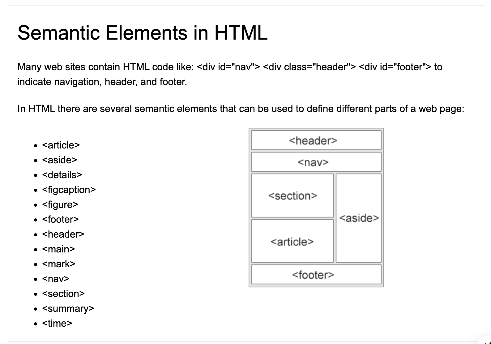

Week 1 - September 8, 2025
Started on the course outline and the presentation of the different projects for the rest of the semester. Also
I am taking all the assignments that I will need to submit from here to the end of the semester. I will need to do a list
of everything with the dates.
Week 2 - September 15, 2025
In this class we learned how to setup Python in our terminal. It was a useful class
to get a better understanding of the basic steps before writing any code in Python.
Important things to know when setting the environment in Python
- Get the miniConda for Python
- Open the file and open terminal: new terminal
- python3 hello_cart351.py
- Then if we want to create the virtual environment, on the terminal: conda create --name filenamehere python=3.13
- Activate the environment: conda activate filenamehere
- Then if using a package manager: pip install request
Week 3 - September 29, 2025
This class was divided into two parts: Flask Part 1 and Flask Part 2, in which
I learned that Flask is a production environment that helps the user to build web applications
in a simpler way because it creates APIs, handles forms, user logins, and databases.
Learning the first part of Flask was very easy to understand. I think it is a good
tool because it is not over complicated and follows the same structure each time. It
is my first time experimenting with it and I think I feel more comfortable working in
this type of environment. I feel comfortable using this structure for future projects.
Important things that I noticed using Flask
Very important to have the right setup working:
- Always setup environment and pip install flask on the terminal (see image)
- Defining a route: the route will be the HTML file by @app.route("/x"), def x(): then app.run()
- Into the python.main: importing flask app (see images)
- The templates folder is important to keep all files organized (HTML)
- Jinja is used to pass variables from main.py to the HTML using {{}}
As updating this journal, i went only to search other resources that will help me to build the
website, i was looking ways to improve the layout and appeareance of my page journal as sematic elements.

Week 4 - October 20, 2025
In this week we continue learning the Flask, in this module we continue working
with templates with jinja, this way all the html files share the same templates
Important information of using the jinja templates
- Always setup environment and pip install flask on the terminal (see image)
- Jinja uses {% extend "base.html" %} and {% extend block %}
- Also uses {% block content %} and {% endfor %}, this is use to put the content inside
on the html file for the child templates of the main html file.
- Also we need to link this new html page to the html itself with this format
href="{{url_for('addPlantData')}}">Add Plant